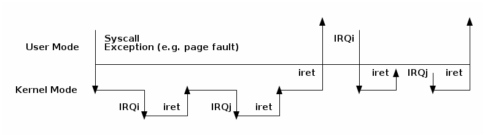

中断
- 中断和异常（x86）
- 中断和异常（Linux）
- 可延迟的工作
- 定时器
对于左侧的每个术语，请从右侧选择最能描述它们的术语。
|
|


- cli（清除中断标志）
- sti（设置中断标志）

下列哪些陈述是正确的？


下面的 gdb 命令用于确定基于 int80 的系统调用异常的处理程序。请正确顺序以下命令以及命令的输出。
(void *) 0xc15de780 <entry_SYSENTER_32>
set $idtr_addr=($idtr_entry>>48<<16)|($idtr_entry&0xffff)
print (void*)$idtr_addr
set $idtr = 0xff800000
(void *) 0xc15de874 <entry_INT80_32>
set $idtr = 0xff801000
set $idtr_entry = *(uint64_t*)($idtr + 8 * 128)
monitor info registers


- 它是作为 IRQ 的结果而运行的（不是异常）
- 没有明确定义的进程上下文与之关联
- 不允许触发上下文切换（不能睡眠、调度或访问用户内存）
- 在稍后的时间调度回调函数
- 中断上下文可延迟操作
- 进程上下文可延迟操作
- 用于初始化、调度和屏蔽的 API
软中断的 API 包括：
- 初始化：
open_softirq()- 激活：
raise_softirq()- 屏蔽：
local_bh_disable()、local_bh_enable()
一旦被激活，回调函数 do_softirq() 会在以下情况下运行：
- 在中断处理程序完成之后，或者
- 从内核线程 ksoftirqd 中运行
- 最低优先级的内核线程
- 在达到一定瓶颈后运行软中断
- 努力使响应时间尽量短，避免进程饥饿
/* 请尽量避免分配新的软中断（softirqs），除非你确实需要非常高频率的线程作业调度。
对于几乎所有的需求，任务（tasklets）其实已经足够了。例如，所有串行设备的底半部（BHs）等都应该转换为任务（tasklets），而不是软中断。
*/
enum
{
HI_SOFTIRQ=0,
TIMER_SOFTIRQ,
NET_TX_SOFTIRQ,
NET_RX_SOFTIRQ,
BLOCK_SOFTIRQ,
IRQ_POLL_SOFTIRQ,
TASKLET_SOFTIRQ,
SCHED_SOFTIRQ,
HRTIMER_SOFTIRQ,
RCU_SOFTIRQ, /* 最好将 RCU 设为最后一个软中断 */
NR_SOFTIRQS
};
任务是在中断上下文中运行的一种动态类型（不限于固定数量）的延迟工作。
任务的 API：
tasklet_init()tasklet_schedule()tasklet_disable() 、tasklet_enable()任务是基于两个专用软中断实现的：TASKLET_SOFITIRQ 和 HI_SOFTIRQ。
任务也是串行化的，即同一个任务只能在一个处理器上执行。
工作队列是一种在进程上下文中运行的延迟工作。
它们是在内核线程的基础上实现的。
工作队列 API:
- 初始化：
INIT_WORK- 激活：
schedule_work()
定时器是建立在:c:macro:`TIMER_SOFTIRQ`之上的。
定时器 API:
- 初始化：
setup_timer()- 激活：
mod_timer()
- 软中断（softIRQ）
- 在中断上下文中运行
- 静态分配
- 同一个处理程序可以在多个核心上并行运行
- 任务（tasklet）
- 在中断上下文中运行
- 可以动态分配
- 同一个处理程序运行是串行化的
- 工作队列（workqueues）
- 在进程上下文中运行
以下哪个中断处理阶段在 CPU 级别上禁用了中断？